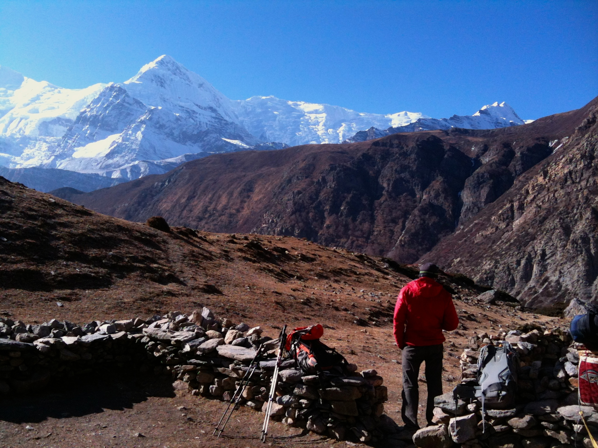
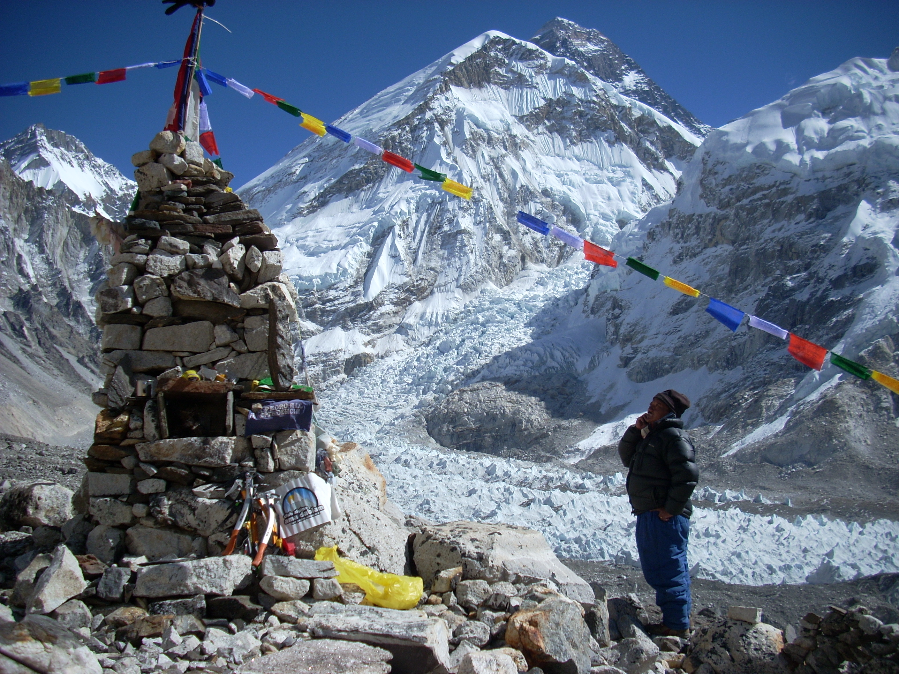
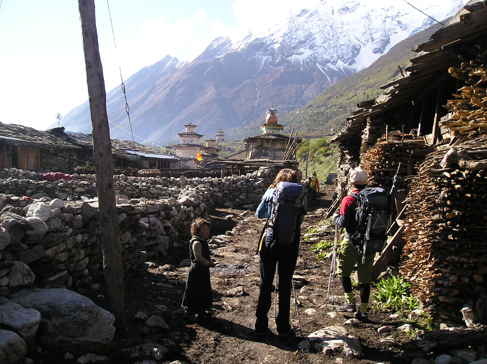
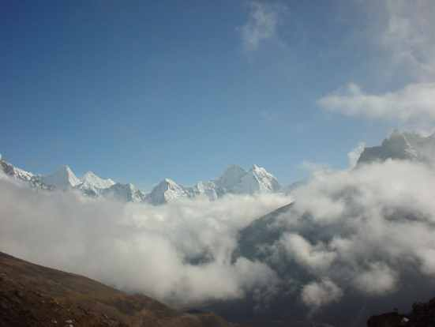
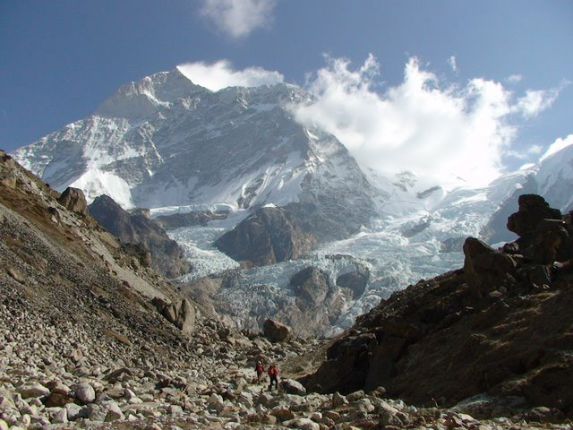

TREKKING
A continuación encontrará todas las actividades de trekking disponibles que le ofrecemos.

Trekking Annapurnas
No es necesario decir que el Tours de los Annapurnas es el más famoso destino de trekking del mundo.

Trekking CB Everest
El trekking al campo base del Everest es toda una emocionante aventura para los visitantes.

Trekking Manaslu
Este circuito sigue una antigua ruta de comercio de la sal a lo largo de la empinada cara del río Budhi Gandaki.

Trekking Vistas Everest
Trekking para aquellos que deseen ver el Everest, pero de un modo más pausado.

Trekking Makalu
Ciruito de mayor exigencia, pero muy gratificante para los excursionistas.

Trekking Island Peak
Precioso trekking, de no mucha dificultad que hará las delicias de los visitantes.